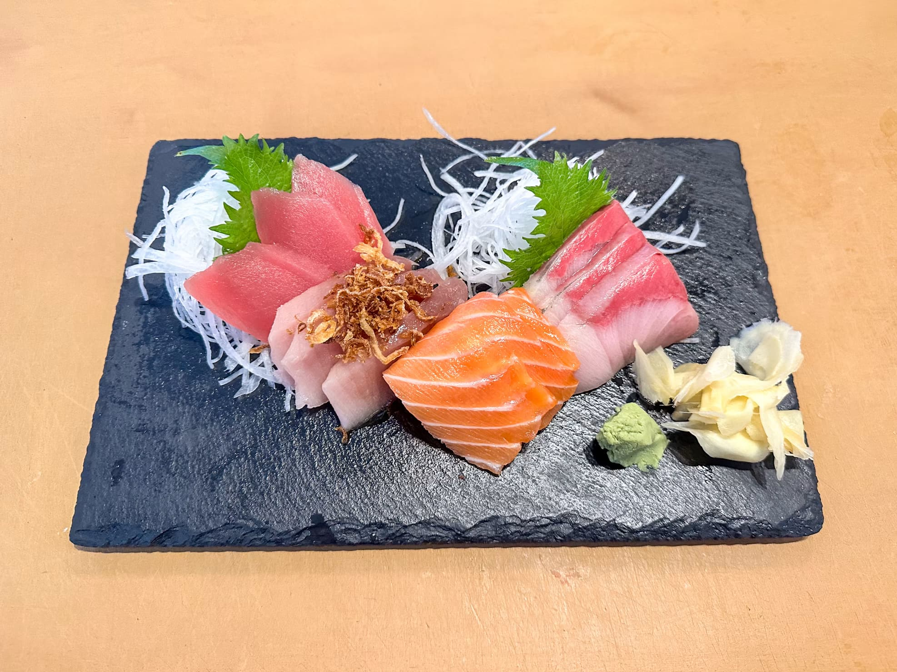
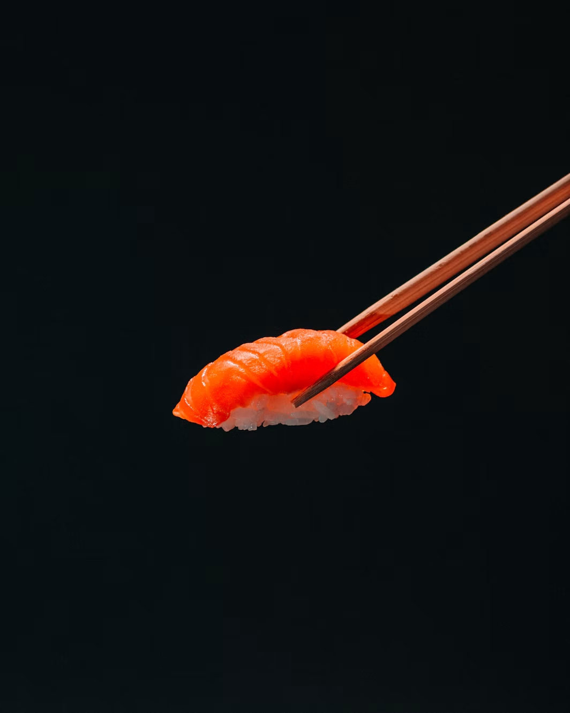
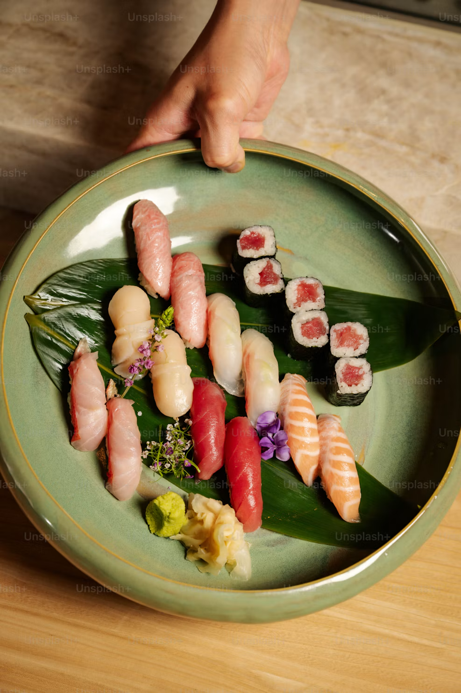
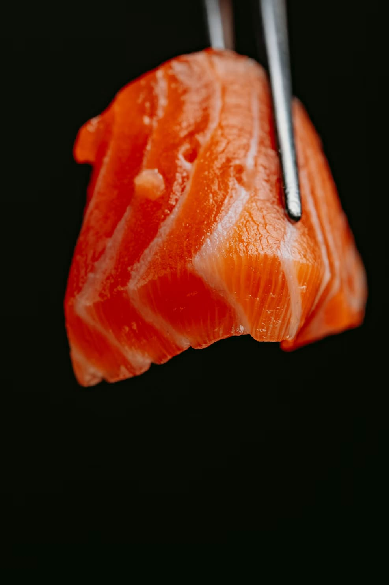

El Sushi
Variedades principales y consejos prácticos para degustarlo.

El sushi nació como una forma de guardar el pescado para que no se estropeara, dejándolo fermentar con arroz. Ya en el siglo XIX, en la ciudad de Tokio, la receta cambió a la comida rápida que conocemos hoy: arroz recién mezclado con vinagre y una lámina de pescado fresco encima para comer al instante.
La opción más típica es el nigiri, que es la bola de arroz moldeada a mano con el pescado arriba. Pero también están los makis (los rollos envueltos en alga negra), los temakis (conos de alga rellenos) y el sashimi, que son solo los cortes de pescado crudo servidos sin nada de arroz.
Un detalle importante al comerlo es mojar en la soja solo la parte del pescado, nunca la base de arroz, evitando así que absorba demasiado líquido o pierda firmeza. El jengibre rosa que ponen al lado sirve para comer un trozo entre pieza y pieza para limpiar el sabor de la boca.
Imágenes del sushi


